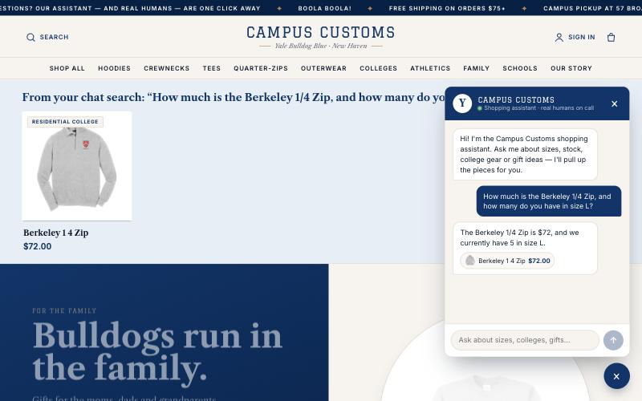
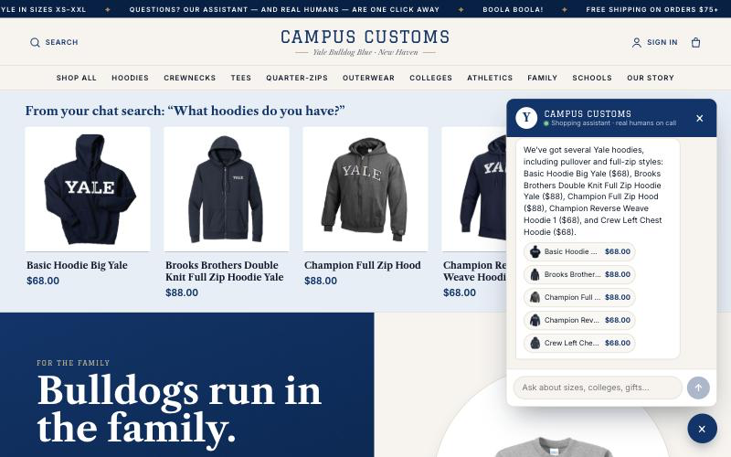
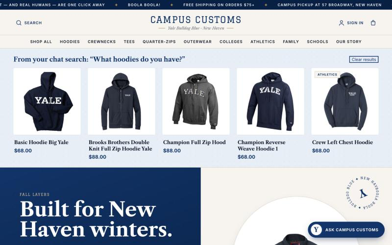
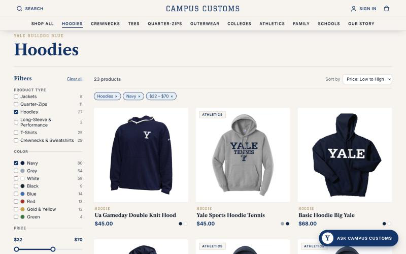

Campus Customs — App Check
Problem 11 · Live site tested on 6 October 2026 at http://localhost:5173 (FastAPI backend on :8000, model gpt-5.6-luna)
| # | Check | Result |
|---|---|---|
| 1 | Chatbot stock & price answer matches the database | PASS |
| 2 | Category question surfaces matching product cards on the page | PASS |
| 3 | Problem 9 usability improvement: filter & sort sidebar (FE-2) | PASS |
Method: each check ran as a guest in a freshly loaded page, so earlier chat history couldn't affect it.
Chat answers came from the live agent, not a mock. Screenshots were taken from the running app, and
the expected values were queried directly from data/campus_customs.db.
Chatbot answers stock & price correctly
Asked: “How much is the Berkeley 1/4 Zip, and how many do you have in size L?”

| Chatbot said | Database (catalogue / inventory) | ||
|---|---|---|---|
| Price | $72 | berkeley-1-4-zip price = 72.0 | ✓ |
| Size L stock | 5 | berkeley-1-4-zip, size L, quantity = 5 | ✓ |
What it proves: the agent pulls price and per-size stock from the database through its tools instead of making them up. Both numbers match exactly, and the reply links to the matching product.
Category question shows product cards on the page
Asked: “What hoodies do you have?” (no product cards were on the page beforehand)


| Card on page | DB garment_type | Price (card / DB) | |
|---|---|---|---|
| Basic Hoodie Big Yale | pullover hoodie | $68 / 68.0 | ✓ |
| Brooks Brothers Double Knit Full Zip Hoodie Yale | full-zip hooded sweatshirt | $88 / 88.0 | ✓ |
| Champion Full Zip Hood | full-zip hooded sweatshirt | $88 / 88.0 | ✓ |
| Champion Reverse Weave Hoodie 1 | hoodie | $68 / 68.0 | ✓ |
| Crew Left Chest Hoodie | pullover hoodie | $68 / 68.0 | ✓ |
What it proves: a plain-English category question makes product cards appear on the page itself, not only in the chat. Every card is a real hoodie with the correct price and links to its product page.
Observation: the catalogue has 27 hoodies, but the chat shows the first 5. This is by design: the
agent's search_products tool returns at most 5 matches. To see all 27, use the
Hoodies link in the navigation.
Usability improvement: filter & sort sidebar (FE-2)
From output/usability.md, FE-2 — Filter & sort sidebar on the Products page.
On /products I ticked Hoodies and Navy, set the price slider's maximum
to $70, and sorted by Price: Low to High.

| App | Expected | ||
|---|---|---|---|
| Products before filtering | 102 | 102 rows in catalogue | ✓ |
| Navy hoodies ≤ $70 | 23 | 23 (SQL count over garment_type, colors, price) | ✓ |
| Sort order | $45, $45, then $68 ×21 | ascending | ✓ |
| Shareable URL | ?type=hoodies&color=navy&min=32&max=70&sort=price-asc | ✓ | |
What it proves: a shopper can go from 102 products to “navy hoodies under $70” in a few clicks, and the count matches the database exactly. The filters are saved in the URL, so the view can be shared or reached again with the back button.
Observation: “Yale Sports Hoodie Tennis” is gray but still matches the Navy filter, because its
database colors are heather gray, navy blue (the lettering is navy). That is correct for
the data, though a shopper might expect “navy” to mean the main garment color.